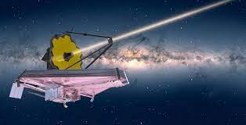
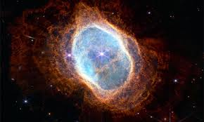
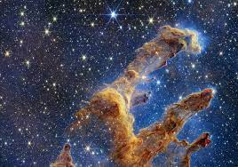

O telescopio james webb

O Telescópio Espacial James Webb é um telescópio espacial desenvolvido
em conjunto pela NASA, a ESA e a CSA, com a finalidade de colocar no
espaço um observatório para captar a radiação infravermelha.
"o ser humano nem pode ver
a essa faixa de luz o telescopio james webb vai nos proporcionar a dedscubri novas coisas
Nebulosa do Anel Sul

As primeiras imagens inéditas divulgadas hoje revelam detalhes da Nebulosa do Anel Sul,
que mostraram, inclusive, uma segunda estrela que forma um sistema binário
(formado por duas estrelas). Por estarem em órbita tão próxima
pareciam apenas um corpo celeste,
o que só pode ser desvendado graças à tecnologia da câmera de infravermelho

sem duvida as imagens que james webb tira é inprecionante e de tirar o folego.